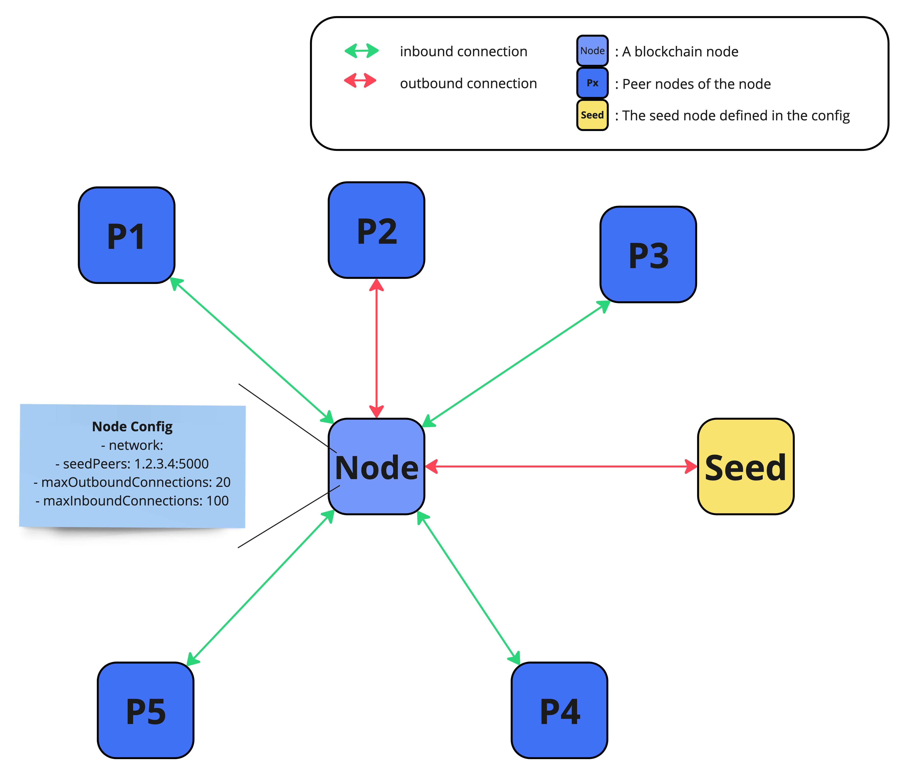

Network
The network domain is responsible for the communication of the peer-to-peer network.
Unstructured P2P network
Every node in the network only connects to a subset of other nodes in the network.
Lisk nodes connect to each other in a random manner, thereby forming an unstructured P2P network.
Unstructured P2P networks scale quite well, which makes the P2P layer ready to handle a large number of peers. At the same time, they are more robust than structured networks, and provide a higher security against network attacks.
Connections in the Lisk P2P protocol are established as WebSockets (see Wikipedia page) using the SocketCluster framework.
Peer discovery
| By default, a node connects randomly to peer nodes that it discovers in the network. However, it is also possible to whitelist or blacklist specific peers in the node config. |

-
Every node first connects to the seed node, defined in the nodes config.
-
To discover new peers, a node looks at the peer list of its connected peer nodes.
-
Every peer makes 20 outgoing connections to randomly chosen peers from its list of known peers.
-
If an outgoing connection is closed by the other peer, a different peer is randomly selected as a replacement.
-
Every node accepts up to 100 incoming connections from other peers, which are distinguishable from the outgoing connections.
-
Periodic shuffling: Shuffles the peer list of nodes randomly every 5 minutes. Every time an outgoing connection is terminated, a new outgoing connection is established. This results in the network being more dynamic and also prevents against network attacks.
Each node retains a list of known peers and their IP addresses and initializes up to 20 outgoing connections to randomly selected peers, while accepting up to 100 incoming connections.
|
Both, incoming and outgoing connections are bidirectional, meaning, information can be exchanged in both ways. Incoming and outgoing only refers to the node who initiated the connection first:
|
Block propagation
Nodes propagate newly received blocks in order to keep the network synchronized and to achieve consensus.

When a new block is received, it is first validated.
- After block validation
-
If it is valid and has not been received, the complete block is forwarded (eager-push). The block is forwarded to 16 randomly chosen connected peers of which at least 8 blocks are forwarded via outgoing connections.
- After block execution
-
Furthermore, after the successful execution of the block and its related state changes on the node, the remaining peers are then informed about the respective block. The nodes informs that a new block has been received by announcing the block hash to the peers, which can request the full block in the case whereby it has not yet been received (lazy-push).
Eager and Lazy Push mechanism
Lisk uses a hybrid of an eager and lazy push mechanism for blocks, in order to save bandwidth whilst maintaining a fast propagation of information throughout the network.
- Eager push
-
Blocks are directly pushed to a subset of the peers.
- Lazy push
-
New blocks are only announced to the peers by sending the block hash or header and not the full payload.
A node uses eager push for a small number of the connected peers and lazy push for the majority of the connected peers. This means that a complete block is sent to a small number of connected peers and the block hash to all other connected peers.
Transaction propagation
Transactions are propagated through the network via the lazy push mechanism.
Every 5 seconds, up to 25 transaction IDs are selected from the transaction pool and sent to all connected peers.
The peers then check if they already have the corresponding transactions and can request any that are missing from the node and include them in their transaction pool.
Transaction pool
The transaction pool collects transactions that are waiting to be included in a block.
While generating a new block, the validator selects a set of transactions from the pool and includes them in the block.
Conversely, when a new block is received, transactions included in the block are removed from the transaction pool.